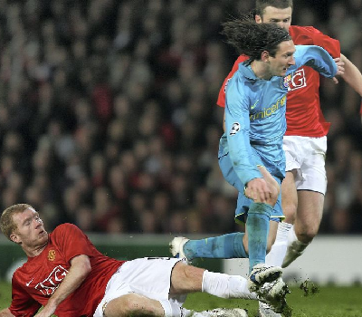

Competições e Estatísticas Por Clube
Competiçõess: La Liga, Liga dos Campeões, Copa del Rey, Supercopa da Espanha
Títulos: Nenhum título importante
La Liga: 28 jogos , 2006 minutos jogados , 10 gol(s) , 12 assistência(s)
Liga dos Campeões: 9 jogos , 728 minutos jogados , 6 gol(s) , 1 assistência(s)
Copa del Rey: 3 jogos , 225 minutos jogados , 0 gol(s) , 0 assistência(s)
Total: 48 jogos , 3667 minutos jogados , 19 gol(s) , 15 assistência(s)
Destaques: Primeira temporada como titular, mas sem títulos.
Primeiro jogo contra seu futuro rival Cristiano Ronaldo.
Em um resultado de 0x0, onde Cristiano Ronaldo perde um penalti decisivo.
Mas em seu segundo jogo acaba ganhando de 1x0 gol de Scholes, sem muito brilho do Cristiano Ronaldo
